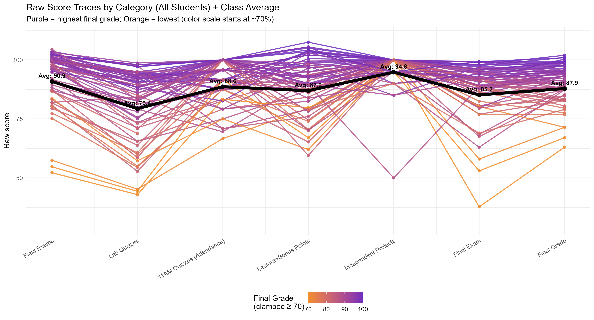
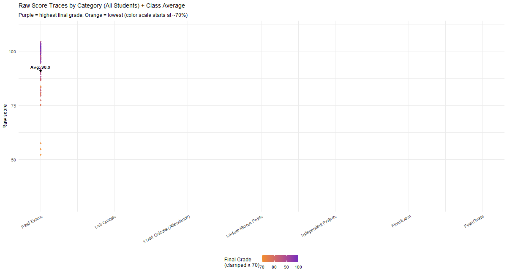
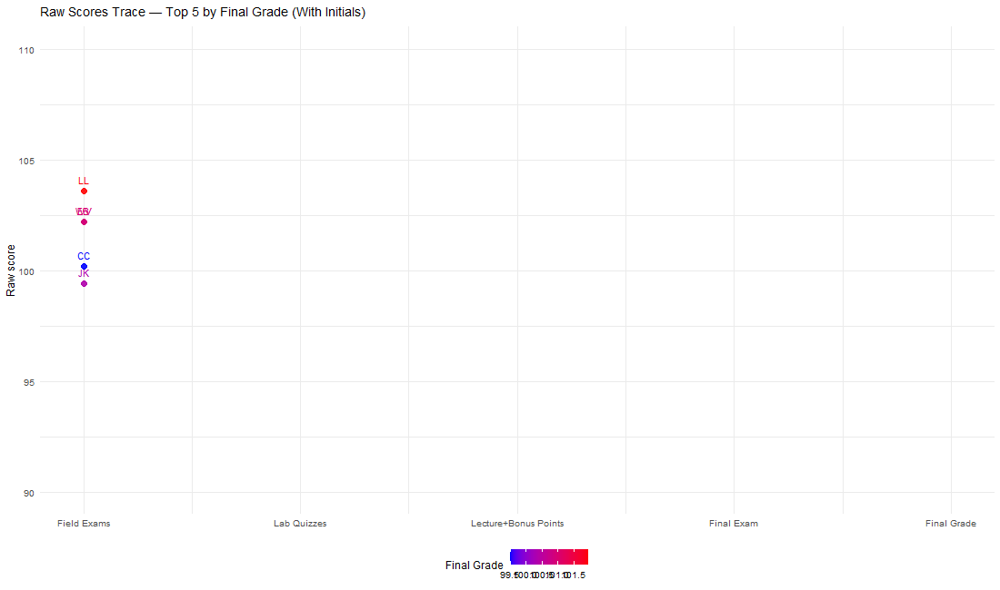
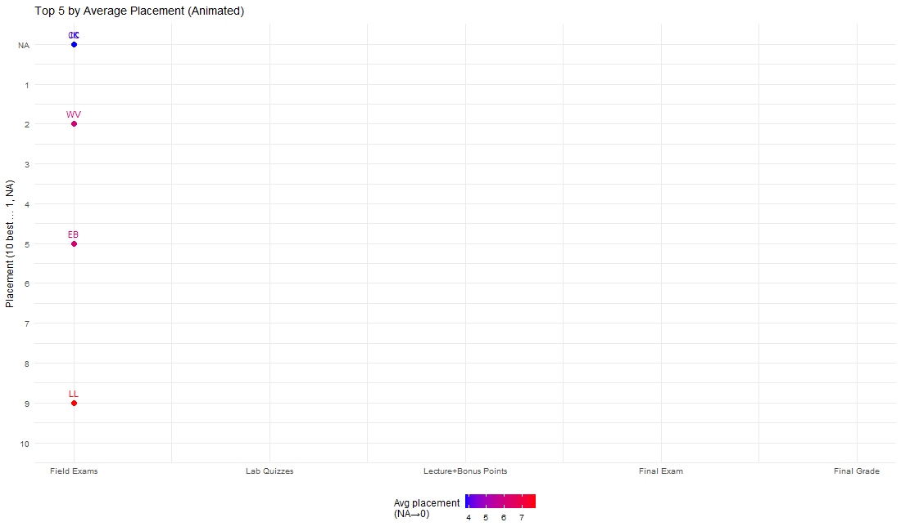
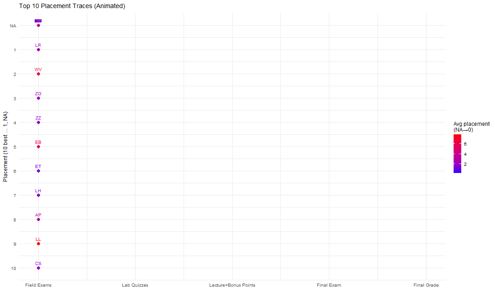

All Students: Assignment Category Scores and Final Grade


Each line represents an individual student and their average score for an assignment category. The line color represents the student’s final course grade, with purple indicating grades closer to 100 and orange indicating grades closer to 70. The bold black bar shows the class average for each assignment category.
This visualization provides insight into overall class performance and highlights which assignment categories were relatively more or less difficult.
Top 5 Students by Final Grade

This graph uses the same format as the previous visualization, but focuses only on the top five students by final grade. Each line represents one student and their score across the assignment categories. The line color represents final course grade, with red indicating the highest grades and blue indicating the lower grades within this top-performing group.
This visualization shows the score distribution and consistency among the five highest-scoring students in the class.
Top 5 Students: Rank by Assignment Category

Each line represents an individual student and their rank in the class for a given assignment category. This view shows how the order of students within the top five changes across different types of assignments.
This visualization helps show how consistent the top five students were and how their performance compared with their peers across assignment categories.
Top 10 Students: Rank by Assignment Category

This graph expands the top-five rank view to include students who ranked within the top ten for each assignment category.
Expanding the view to the top ten shows how large the high-performing student pool is. If the same ten students ranked consistently across every assignment category, only ten lines would appear. Instead, more students appear, showing that students who perform very well in one assignment category may not perform as strongly in another. This highlights the dynamic nature of student strengths across the course.